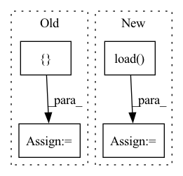

Pattern ID :11520
Before Change
)
// Text & Mel tensor sizes for each sample
expected_sizes = {
(torch.Size([1, 34]), torch.Size([1, 80, 205])),
(torch.Size([1, 29]), torch.Size([ 1, 80, 218After Change
// Check checkpoint
checkpoint_path = os.path.join(output_directory, "checkpoint_2")
assert os.path.isfile(checkpoint_path)
checkpoint_dict = torch.load( checkpoint_path, map_location="cpu")
assert checkpoint_dict["state_dict"] == MockedTacotron2._state_dict
assert checkpoint_dict["optimizer"] == MockedOptimizer._state_dict
assert checkpoint_dict["iteration"] == 2
assert checkpoint_dict["epoch"] == 1In pattern: SUPERPATTERN
Frequency: 6
Non-data size: 4
Instances Fragment ID: 39190356
Project Name: benaandrew/voice-cloning-app
Commit Name: 32178c2291b4538279040d88ef9a5063e19f95af
Time: 2021-07-30
Author: bandrew01@qub.ac.uk
File Name: tests/test_training.py
M Class Name: AnonimousClass
N Class Name: AnonimousClass
M Method Name: test_training_a(7)
N Method Name: test_training_a(7)
M Parent Class:
N Parent Class:
M File Name: tests/test_training.py
N File Name: tests/test_training.py
M Start Line: 99
M End Line: 105
N Start Line: 84
N End Line: 121
Before Change
self.frames_size = frames_size
// video buffer
self.video_buffer = {}
// load video frames into memory and resize
// self.video2frames = {}
// for video_path in tqdm(self.video_paths, desc="loading videos"):After Change
frames_num=frames_num,
frames_size=frames_size,
compress=True)
self.video2data = np.load( buffer_save_path)
elif os.path.isfile(video_dir):
self.video2data = np.load(video_dir)
logger.info("successfully loading {} videos".format(len(self.video2data)))
Fragment ID: 39190359
Project Name: kamino666/video-captioning-transformer
Commit Name: 22bb2cb5e650b1857dd2790720a952496c9f0f23
Time: 2021-09-15
Author: 516015417@qq.com
File Name: dataloader.py
M Class Name: MSR_VTT_VideoDataset
N Class Name: MSR_VTT_VideoDataset
M Method Name: __init__(8)
N Method Name: __init__(5)
M Parent Class: Dataset
N Parent Class: Dataset
M File Name: dataloader.py
N File Name: dataloader.py
M Start Line: 35
M End Line: 53
N Start Line: 28
N End Line: 70
Before Change
mode, batchsz, n_way, k_shot, k_query, resize))
if mode == "train":
self.transform = transforms.Compose([ lambda x: Image.open(x).convert("RGB"),
transforms.Resize((self.resize, self.resize)),
// transforms.RandomHorizontalFlip(),
// transforms.RandomRotation(5),
transforms.ToTensor(),
transforms.Normalize((0.485, 0.456, 0.406), (0.229, 0.224, 0.225))After Change
subgraph_list = pickle.load(f)
with open(os.path.join(root, path_l), "rb") as f:
subgraph2label = pickle.load( f)
self.subgraph2label = subgraph2label
self.subgraph_list = subgraph_list Fragment ID: 39190353
Project Name: mims-harvard/g-meta
Commit Name: aed3468b5f71c857f788169b34b97a411628930b
Time: 2020-03-02
Author: cosamhkx@gmail.com
File Name: src/subgraph_data_processing.py
M Class Name: Subgraphs
N Class Name: Subgraphs
M Method Name: __init__(9)
N Method Name: __init__(9)
M Parent Class: Dataset
N Parent Class: Dataset
M File Name: src/subgraph_data_processing.py
N File Name: src/subgraph_data_processing.py
M Start Line: 44
M End Line: 70
N Start Line: 42
N End Line: 53
Before Change
// ]
// ).T
final_state_range = np.array(
[ // (num_inputs, 2)
[ -0.25, -0.25, 2, -0.01, -0.01, -0.01After Change
model_name=args.controller,
)
elif args.system is "Quadrotor_8D":
controller = th.load( dir_path+"/models/Quadrotor_8D/intermediate_policy_0.pt")
controller.eval()
else:
raise NotImplementedError
Fragment ID: 39190323
Project Name: mit-acl/nn_robustness_analysis
Commit Name: 2851bced8fd743dcf813b46950d4aa9fe09066c2
Time: 2022-05-10
Author: nrober1122@gmail.com
File Name: nn_closed_loop/example.py
M Class Name: AnonimousClass
N Class Name: AnonimousClass
M Method Name: main(1)
N Method Name: main(1)
M Parent Class:
N Parent Class:
M File Name: nn_closed_loop/example.py
N File Name: nn_closed_loop/example.py
M Start Line: 89
M End Line: 532
N Start Line: 91
N End Line: 306
Before Change
// model = model.load_from_checkpoint(path, strict=False)
print("loaded weights")
bestmodels = {
"semi_supervised_heatmap_tracker": model,
"base_heatmap_tracker": model2,
"semi_supervised_regression_tracker": model3,
"base_regression_tracker": model4,
}
make_dataset_and_evaluate(cfg, datamod, bestmodels)
After Change
// for now this works without saving the pca params to dict
bestmodels = {}
for model_name, hydra_path in zip(cfg.eval.model_names, cfg.eval.hydra_paths):
model_config = OmegaConf.load( "../../" + hydra_path + ".hydra/config.yaml")
ModelClass = get_model_class(model_config.model.model_type, model_config.model.semi_supervised)
ckpt_path = "../../" + hydra_path + "tb_logs/my_test_model/version_0/checkpoints/"
model_path = ckpt_path + os.listdir(ckpt_path)[0]
if model_config.model.semi_supervised: Fragment ID: 39190349
Project Name: danbider/lightning-pose
Commit Name: 5059f2e7e8c2734066a63a9c6c9b03574c3c5de2
Time: 2021-10-18
Author: nicholasg101@gmail.com
File Name: scripts/predict_compare.py
M Class Name: AnonimousClass
N Class Name: AnonimousClass
M Method Name: predict(1)
N Method Name: predict(1)
M Parent Class:
N Parent Class:
M File Name: scripts/predict_compare.py
N File Name: scripts/predict_compare.py
M Start Line: 77
M End Line: 94
N Start Line: 92
N End Line: 107
Before Change
wandb.log({"train/loss": loss.item()})
if (i+1) % args.sample_freq == 0:
model.eval()
dec = decoder.generate(torch.LongTensor([ args.bos_tokenAfter Change
def train(args):
dataloader = Im2LatexDataset().load(args.data)
dataloader.update(**args)
valdataloader = Im2LatexDataset().load( args.valdata)
valargs = args.copy()
valargs.update(batchsize=args.testbatchsize, keep_smaller_batches=True)
valdataloader.update(**valargs)
device = args.device Fragment ID: 39190345
Project Name: lukas-blecher/latex-ocr
Commit Name: d52e43388fd9c01f33b5e03bcccbba0a0c8e51b5
Time: 2021-02-15
Author: luk.blecher@gmx.de
File Name: train.py
M Class Name: AnonimousClass
N Class Name: AnonimousClass
M Method Name: train(1)
N Method Name: train(1)
M Parent Class:
N Parent Class:
M File Name: train.py
N File Name: train.py
M Start Line: 21
M End Line: 61
N Start Line: 24
N End Line: 54